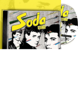

El arquitecto del rock latinoamericano
Gustavo Adrián Cerati fue compositor, cantante, guitarrista y productor musical argentino. Líder y alma de Soda Stereo, definió el sonido del rock en español durante décadas con una obra que fusionó el new wave, el pop y la experimentación electrónica.
Obra solista
Desde Amor Amarillo hasta Fuerza natural, una carrera que redefinió el rock en español.
Ver discografía completa


Una vida en música
-
1982
Creación de Soda Stereo
-
1993
Amor amarillo — debut solista
-
1999
Bocanada — obra maestra
-
2009
Fuerza natural — el último adiós
La banda que cambió el rock en español para siempre.
Junto a Zeta Bosio y Charly Alberti, Cerati llevó a Soda Stereo a convertirse en la banda de rock en español más influyente de todos los tiempos, llenando estadios en toda Latinoamérica.
Explorar Soda Stereo
Su legado, en voces del mundo
Artistas, fans y el mundo de la música rindieron homenajes al más grande.
-
Tributos musicales
Versiones y covers de artistas de toda América Latina.
-
Conciertos
Shows y eventos en su memoria y por todo el continente.
Tienda oficial
-

-
